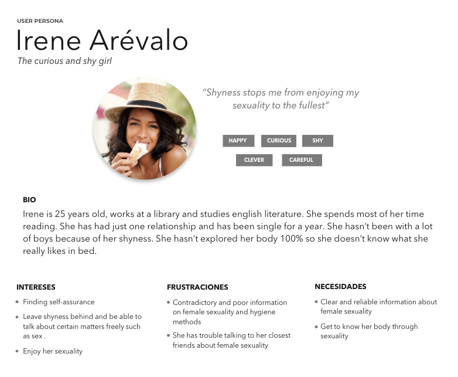

Project
Manko is an educational game aimed to help women enjoy their sexuality.
The purpose of Manko is to end with the female sexuality taboo.
Manko means “cunt” in Japanese and it's a forbidden word there, as it is considered a very dirty and unrespectful word.
The name of the game is inspired by the manko-artist Rokudenashiko,
a Japanese women jailed because of doing art with her vagina. You can find out more about her story on her
blog or on her book What is obscenity?.
Research
The first thing I did was research about female sexuality to see what was out there about the subject.
I found out something I already knew… female sexuality is a mystery for many woman and man. I also found out about
a very interesting term, the orgasm gap. Several studies have been done about this matter and the results are that almost a
50% of heterosexual woman didn’t orgasmed when sexually intimate against the 95% of heterosexual men who did orgasmed.
This is a problem. And why is this happening? Well, woman do not know what they like because they do not know their body,
among other reasons…
After the first research on the subject I did a survey that verified that women had little information about woman sexuality and that more of the 90% of the survey respondents
answered that they wanted to expand their knowledge about female masturbation, against the 10% who think they already know everything about it.
I also did a series of interviews that confirmed that a game teaching women (and men) about female masturbation was necessary.
“The self-knowledge of our body is very important and for women is difficult, as it is something we don’t have visible, we have to open and look.”
“Sometimes I don’t know how to tell my sexual partner what I like cause I haven’t discover it yet”
User Persona & User Journey
Based on the empathy map done with the insights of the surveys and the interviews I created Irene Arévalo, our user persona. Irene is one of these woman who doesn’t usually
orgasms during sexual intercourse. She has not explored her body therefore she doesn’t know what she likes and she can’t explain it to her sexual partners. Through the user journey
I could identify the touchpoints where the app would help the user solve her problems.

Problem statement
This is the problem my user persona has to deal with and is the one I have to solve with the main features of the app.
“Irene needs to know her body to enjoy her sexuality and avoid/notice possible illness”
Defining the app
Defined the problem of my users and using the Lean UX methodology I defined the features that the game was going to have.
Game with the information written and on an educational video before playing.
Advices, where you can find articles about all the subjects concerning female sexuality, from erotic toys to menstruation.
Profile where you can find your favorite techniques and your earned badges.
Site Map & User Flows
Before to start working on wireframes, I did a card sorting and defined the site map of the app so I could see the relationship between the features and the navigation of the user.
I also did the user flow to see the path my user was going to take to complete the task.
Wireframes
To test quickly the idea I did low fidelity wireframes. With the feedback received I created the mid-fi wireframes to test the user flows.

UI Design
The visual language of the app had to represent: Freshness, woman empowerment, sexuality and fun. To define the visual tone I made a moodboard that expressed those concepts through images and colors.
After that I did the style tile which led me to create the style guide for the app.

Moodboard

Style tile
Conclusions
After the tests with the users, this is what Manko achieves: gives woman (and man who want to discover how female
pleasure works) the tools to explore their sexuality and thus get to know what they like and be able to
explain it to their sexual partners in order to reach orgasms in every sexual relationship they have.
Prototype
Here you can find the prototype of the MVP of the app. It is not a full working prototype but it helped me to test the app and learn what the next steps are. The other techniques need to be developed
and the Advices part.